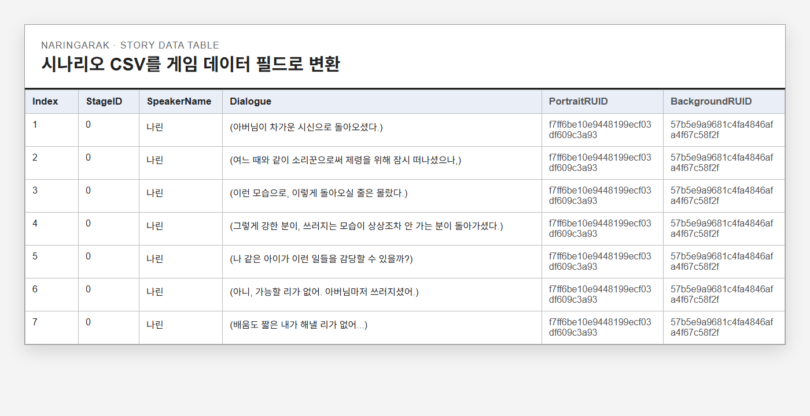

직접 제작한 음악
스테이지 1 리듬게임용
Suno로 제작한 나린가락 스테이지 1 음악입니다.
05 / 범위 조정과 협업
팀 프로젝트 / 조선 국악 판타지 리듬게임
프로젝트 목록 ↗나린가락
팀이 원하는 정서와 완성할 수 있는 분량을 함께 맞췄습니다.
팀장과 PM으로 일정과 역할을 조정하고 시나리오와 사운드를 맡았습니다. 확장한 세계관이 팀이 목표로 한 힐링 감성과 멀어졌다는 피드백을 받고, 설정과 분량을 다시 정리했습니다. 3주 동안 5개 스테이지를 가진 플레이 가능한 게임으로 완성했습니다.

- 제작 기간
- 2026.02.13–03.03
- 내 역할
- 팀장, PM
시나리오와 사운드 - 제작 범위
- 5개 스테이지
약 20–30분 분량 - 작업 자료
- 시나리오 CSV
스테이지별 곡 구조, PV
장편 설정을 줄이고 목표한 감정에 집중했습니다.
다른 팀원이 제안한 세계관을 살리면서 삼족오와 국악, 거문고의 의미를 엮어 조선 국악 판타지를 구상했습니다. 하지만 설정과 시나리오가 길어졌고, 팀이 원하는 힐링 감성과도 멀다는 피드백을 받았습니다.
팀이 합의한 핵심 감정과 출시 가능한 분량을 기준으로 설정 일부를 폐기하고 시나리오를 압축했습니다. 설정을 얼마나 많이 담을지보다, 제한된 분량에서 어떤 감정을 남길지를 기준으로 바꾼 과정입니다.
세계관과 장편 설정 확장
시나리오가 길어지고 목표한 힐링 방향과 거리가 생겼습니다.
핵심 감정과 5개 스테이지
출시 가능한 분량에 맞춰 설정과 시나리오를 줄였습니다.
장면과 대사를 게임 데이터로 정리했습니다.
시나리오를 구현에 연결하기 위해 장면, 화자, 대사와 인물 및 배경 리소스 ID를 CSV로 정리했습니다. 이야기의 내용과 함께 어떤 스테이지에서 어떤 화면 리소스를 사용할지 전달하는 작업이었습니다.
곡의 템포와 스테이지 난이도는 서사의 긴박도와 연결했습니다. 배경 시대와 복장, 분위기도 고증을 다시 확인하며 조정했습니다.

매일 짧게 진행 상황을 공유하며 작업을 조정했습니다.
매일 10분씩 진행 상황을 공유하며 역할별 작업을 확인했습니다. 팀장과 PM으로 일정과 분량을 조정하고, 시나리오와 사운드 작업을 함께 진행했습니다.
추가 잔업 1회를 제외하고 일정 안에 게임을 완성했습니다. 이번 작업에서는 상세한 설정을 쓰기 전에 목표 정서와 분량, 완료 기준부터 팀과 합의하는 것이 필요하다고 느꼈습니다.
초기에 목표 정서와 완료 기준을 합의하고, 중간 검토에서 제작 범위를 조정하겠습니다. 설정을 확장하기 전에 해당 내용이 플레이 경험과 일정에 어떤 영향을 주는지 먼저 확인하려고 합니다.